<title>Bull-horns OG Adaptor</title>
<meta name="claude:viewport-fit-sides" content="cover">
<style>
/* layout: single reading column, paper style */
:root{--bg:#fbfaf7;--fg:#1d2128;--muted:#5d6470;--line:#d6d8dd;--accent:#b5651d;--f-body:"Source Serif 4",Georgia,serif;--f-ui:"IBM Plex Sans",system-ui,sans-serif;--f-num:"IBM Plex Mono",ui-monospace,monospace}
@media (prefers-color-scheme:dark){:root:not([data-theme="light"]){--bg:#121418;--fg:#e6e8ec;--muted:#9aa1ad;--line:#2c313a;--accent:#e0a060;color-scheme:dark}}
:root[data-theme="dark"]{--bg:#121418;--fg:#e6e8ec;--muted:#9aa1ad;--line:#2c313a;--accent:#e0a060;color-scheme:dark}
body{background:var(--bg);color:var(--fg);font-family:var(--f-body);line-height:1.6;padding-left:max(16px,env(safe-area-inset-left,0px));padding-right:max(16px,env(safe-area-inset-right,0px));padding-block:28px}
main{max-width:72ch;margin:0 auto} h1{font-size:1.6rem;line-height:1.25;text-wrap:balance;margin:0 0 .3em} h2{font-size:1.15rem;margin:1.6em 0 .4em;font-family:var(--f-ui)} h3{font-size:1rem;margin:1.2em 0 .3em;font-family:var(--f-ui)}
.byline,.mark{font-family:var(--f-ui);color:var(--muted);font-size:.9rem} .abstract{border-left:3px solid var(--accent);padding-left:1em}
table{border-collapse:collapse;width:100%;font-family:var(--f-ui);font-size:.88rem;margin:.6em 0} th,td{border-bottom:1px solid var(--line);padding:.35em .5em;text-align:left;vertical-align:top} .num{font-family:var(--f-num);font-variant-numeric:tabular-nums}
.tw{overflow-x:auto} code{font-family:var(--f-num);font-size:.88em}
figure{margin:1.2em 0}figure img{width:100%;height:auto;border:1px solid var(--line);border-radius:6px;display:block}figcaption{font-family:var(--f-ui);font-size:.85rem;color:var(--muted);margin-top:.4em}.pair{display:grid;grid-template-columns:repeat(auto-fit,minmax(260px,1fr));gap:12px}.pair figure{margin:0}
ol.refs{font-family:var(--f-ui);font-size:.85rem}
</style>
<link rel="stylesheet" href="https://fonts.googleapis.com/css2?family=IBM+Plex+Mono&family=IBM+Plex+Sans:wght@400;600&family=Source+Serif+4:opsz,wght@8..60,400;8..60,600&display=swap">
<main>
<h1>From the golden gap to the Bull-horns OG adaptor</h1>
<p class="byline">DICTO, with Claude (Opus 5.5) and Claude Fable 5.1 · study draft, 2026-10-18 · DICTO · dictospheres.com</p>
<p class="abstract"><b>Abstract.</b> DICTO's Ogdoecontahedron (OG), joined to copies of itself hexagon to hexagon, packs space as a body-centred cubic (bcc) double network filling 77.43%. For three days we searched, exactly and by machine, for a good way to fill the remaining space. The search produced a family of exact, verified space-filling kits on the octet truss, but not a clean fill of the bcc gap itself. DICTO then described a shape he saw "between six OGs". Built as stated, it is one piece that fills the whole gap: the resin round the network cut at the holes between six OGs, three identical pieces per OG, OGs 77.4332% and adaptors 22.5668% of space, exactly. This draft records the results of the search, the solution, and how much time and compute went into the search before it.</p>

<figure>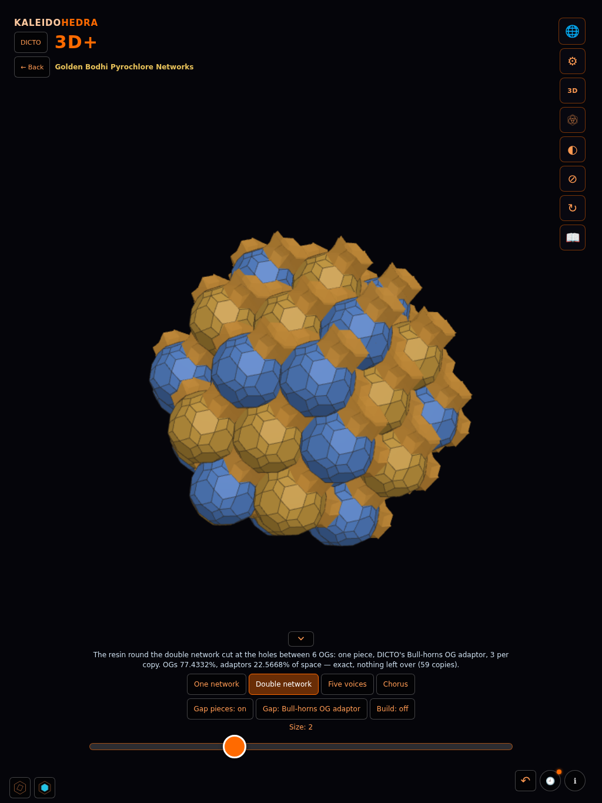<figcaption><b>Figure 1.</b> The solution in the app: the yellow and blue OG networks with DICTO's Bull-horns OG adaptors (amber) filling the gap — Golden Bodhi Pyrochlore Networks, Double network, live 2026-10-18.</figcaption></figure>
<h2>1. The problem</h2>
<p>The OG (102 corners; 60 kites, 20 regular hexagons) has eight hexagons on the faces of a regular octahedron |x|+|y|+|z| = R, R = 2φ/3 (exact). Joining copies on these hexagons gives two interpenetrating diamond networks, the yellow and blue OGs of the Golden Bodhi Pyrochlore Networks world, together a bcc packing with cube edge a = 8φ/9 that fills (9225 − 3915√5)/608 = 77.4332% of space. The question: how to fill the rest with few, good pieces — ideally golden ones.</p>

<h2>2. What the computation found</h2>
<h3>2.1 The golden gap (bcc)</h3>
<ul>
<li>Outside the OGs' golden envelopes (rhombic triacontahedra), the gap G′ is exactly 93√5/2 − 831/8 = 10.216% of space; the envelopes overlap their eight nearest neighbours in golden rhombohedra, which can be given away consistently as keys.</li>
<li>Between second neighbours the gap has flat slabs, 0.104919 thick (exact), closed exactly by two layers of golden rhombohedra (λ/φ oblate or λ/φ² prolate); the slab face edge is 3φ times the rhombohedron edge, so golden bricks are needed too.</li>
<li>The facing five-fold corners of neighbouring envelopes and OGs are offset by 2/3 and 4/3 of their star radii: the bcc lattice's thirds prevent a Penrose-rhombus link there.</li>
<li>Machine search (a "puzzler" with backtracking, and symmetric growth) reached at best 15.8% of G′ with golden pieces before it was stopped.</li>
</ul>
<div class="pair"><figure>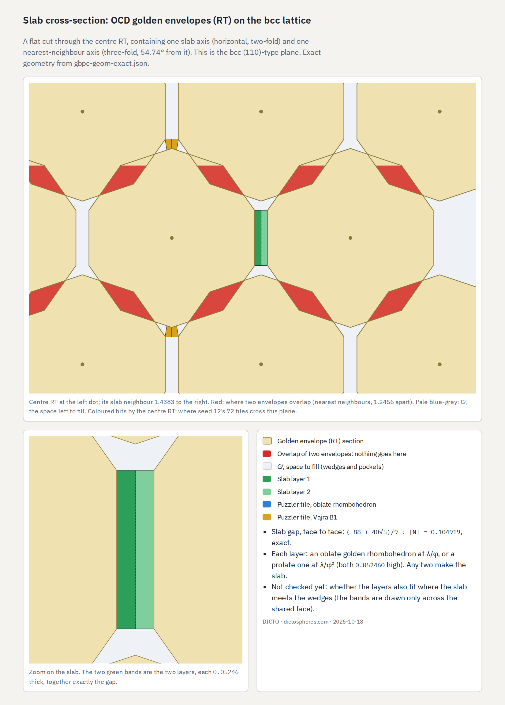<figcaption><b>Figure 2.</b> Golden gap (bcc): a cut through neighbouring envelopes — overlaps (red) and the flat slab closed by two golden layers.</figcaption></figure><figure>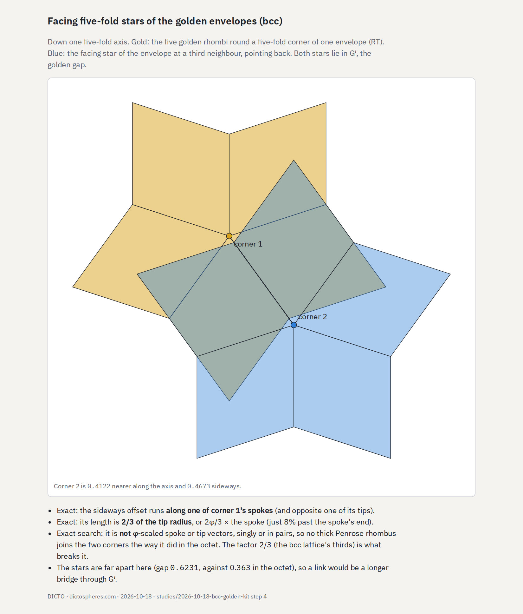<figcaption><b>Figure 3.</b> Facing five-fold stars of envelopes in bcc: the offset is exactly 2/3 of the tip radius — no Penrose link.</figcaption></figure></div>
<h3>2.2 The octet kits (all proved exactly)</h3>
<p>Moving the OGs onto the octahedra of the octet truss made the gap tractable. Fable verified each kit with its own exact ℚ(√5) engine and dense sampling.</p>
<div class="tw"><table><tr><th>Kit</th><th>Pieces</th><th>Key facts</th></tr>
<tr><td>Golden-key octet</td><td>keyed octahedron + tetrahedron (L/R)</td><td>keys = the envelope's own corners; their base corners at the golden-section points (φ : 1) of the octahedron edges</td></tr>
<tr><td>Penrose-core octet</td><td>notched octahedron + middle piece + tetrahedron (L/R)</td><td>facing five-fold stars joined by an exact thick Penrose rhombus (72°) and two φ-smaller ones</td></tr>
<tr><td>Golden envelope octet</td><td>envelope + grown core piece (L/R)</td><td>envelopes fill exactly 10/φ⁶; φ⁻² vertex cuboctahedron = ⅓ of the envelope; tetartoid core in each tetrahedron</td></tr>
<tr><td>OG + W (vertex, edge/Penrose)</td><td>OG + one glue piece</td><td>glue = rhombic dodecahedron or edge octahedron minus the OGs; all three Penrose cores inside one edge piece; keyed version locks (no piece can slide out)</td></tr></table></div>
<div class="pair"><figure>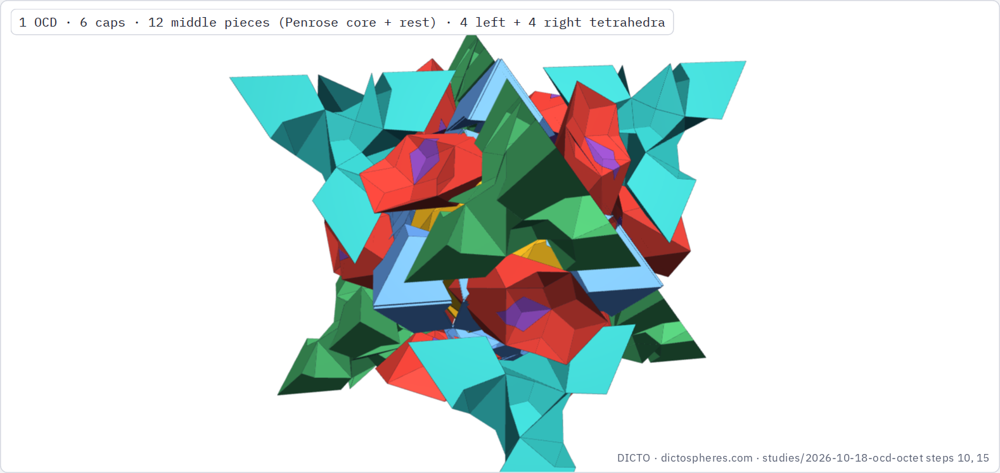<figcaption><b>Figure 4.</b> Keyed octet round one OG: caps, middle pieces (Penrose core + rest), left and right tetrahedra.</figcaption></figure><figure>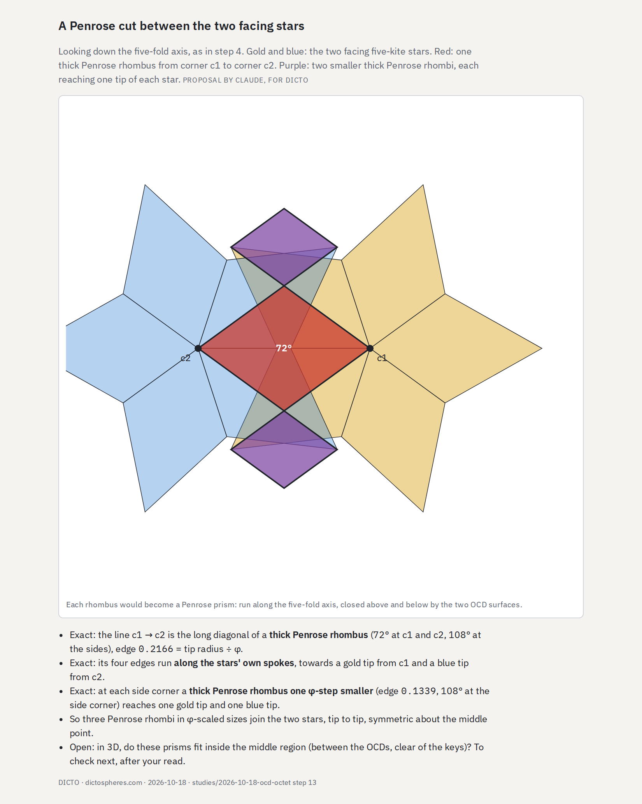<figcaption><b>Figure 5.</b> The thick Penrose rhombus joining facing five-fold stars in the octet (exact), with two φ-smaller rhombi.</figcaption></figure><figure>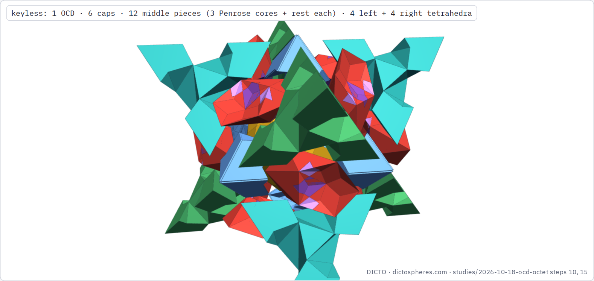<figcaption><b>Figure 6.</b> Keyless kit with three Penrose cores per edge (DICTO's choice).</figcaption></figure><figure>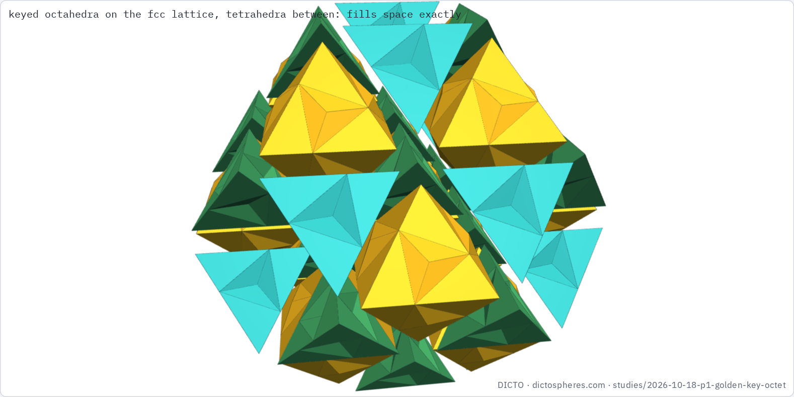<figcaption><b>Figure 7.</b> Golden-key octet network: keyed octahedra and tetrahedra.</figcaption></figure><figure>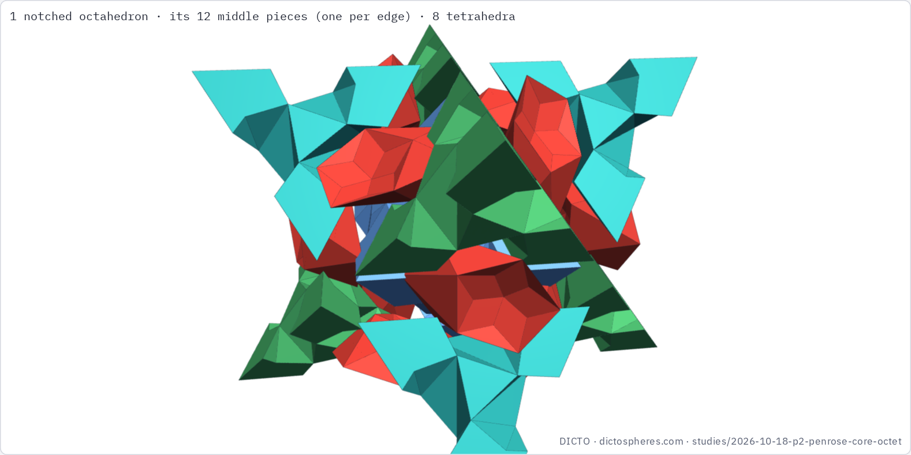<figcaption><b>Figure 8.</b> Penrose-core octet round one octahedron.</figcaption></figure><figure>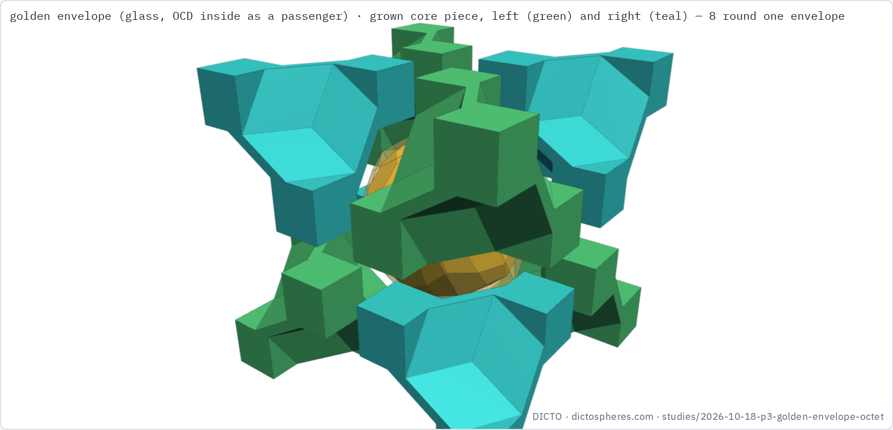<figcaption><b>Figure 9.</b> Golden envelope octet: envelope (glass, OG inside) and grown core pieces.</figcaption></figure><figure>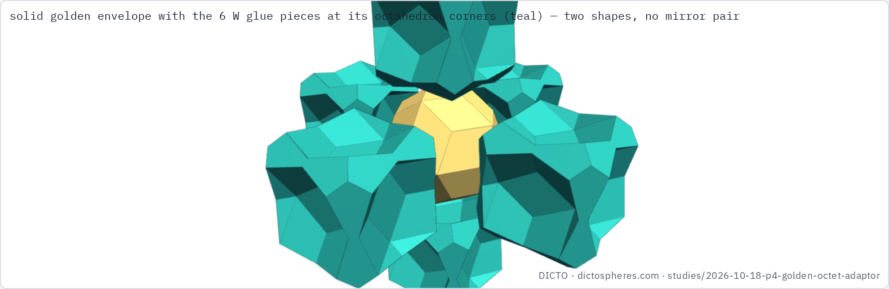<figcaption><b>Figure 10.</b> Envelope + W (Fable): the vertex glue piece round the golden envelopes.</figcaption></figure><figure>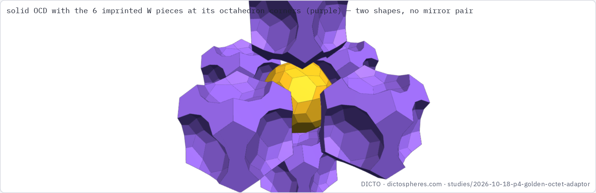<figcaption><b>Figure 11.</b> OG + W with exact OG imprints.</figcaption></figure><figure>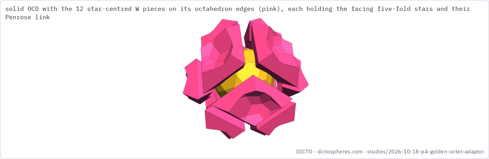<figcaption><b>Figure 12.</b> OG + W centred on the Penrose star: 12 glue pieces round one OG.</figcaption></figure><figure>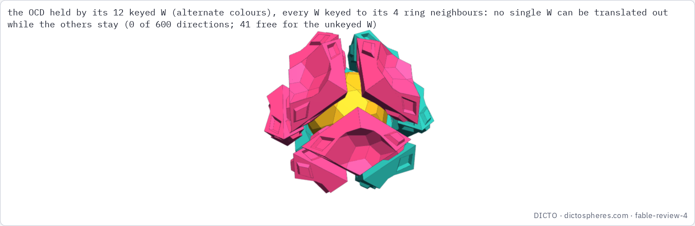<figcaption><b>Figure 13.</b> Keyed star-centred W (Fable): 12 identical pieces locked round one OG.</figcaption></figure><figure>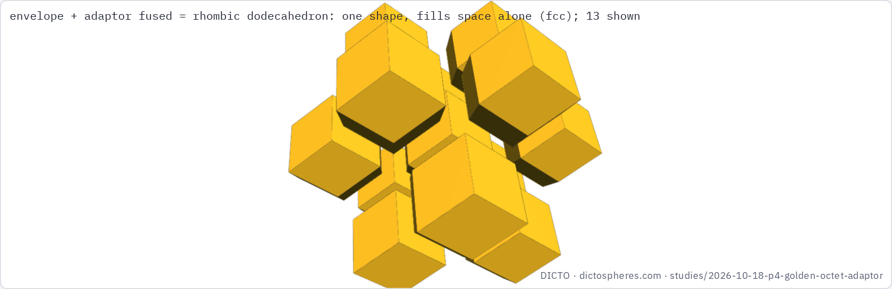<figcaption><b>Figure 14.</b> One-piece golden octet: rhombic dodecahedra with golden envelopes inside.</figcaption></figure><figure>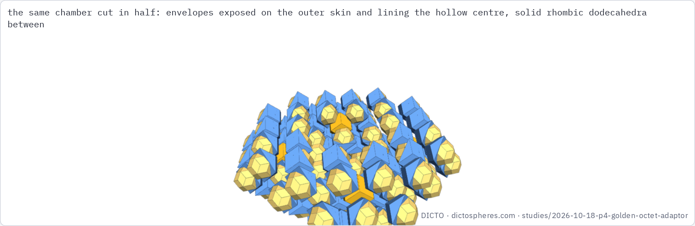<figcaption><b>Figure 15.</b> Outside the plan: a hollow spherical chamber, envelopes exposed outside and inside.</figcaption></figure></div>

<h2>3. DICTO's solution: the Bull-horns OG adaptor</h2>
<p>DICTO, looking at the double network in the app: "five double T bars crossing is the shape between 6 OGs … a central double T bar in the gap between two widely and narrowly spaced OGs … you can also visualise the double Ts as double crescents". Restated: cut the resin at the holes surrounded by six OGs (two close, across a slab, and four further out), giving each point of resin to its nearest such hole.</p>
<ul>
<li>These holes are (a/2)(i, j, k) with one or two odd entries, three per OG, all equivalent, so <b>one piece shape fills all the resin</b>.</li>
<li>Each piece meets exactly six OGs (2 at a/2, 4 at a/√2); it is one solid without holes, centrosymmetric with a mirror plane, sphericity 0.52.</li>
<li>Exact: piece = (18728 − 6296√5)/41553; OGs (9225 − 3915√5)/608 = <b>77.4332%</b>, adaptors (−8617 + 3915√5)/608 = <b>22.5668%</b>; OG + 3 pieces = the bcc cell. Each piece is about a tenth of an OG by volume.</li>
<li>Built and checked the same evening (dicto-node, manifold3d); added to the app's double view as a switch and published live the same evening (Figure 1).</li>
</ul>
<div class="pair"><figure>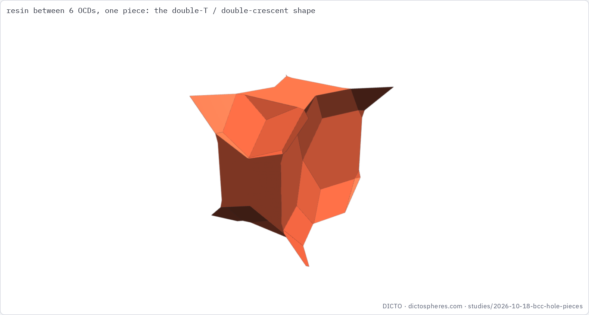<figcaption><b>Figure 16.</b> The Bull-horns OG adaptor: the resin between six OGs, one piece.</figcaption></figure><figure>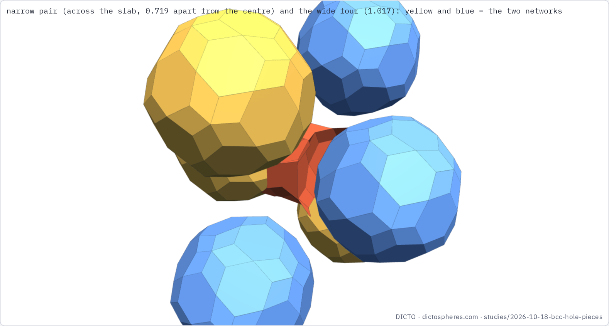<figcaption><b>Figure 17.</b> With its six OGs: the narrow pair across the slab and the wide ring of four.</figcaption></figure><figure>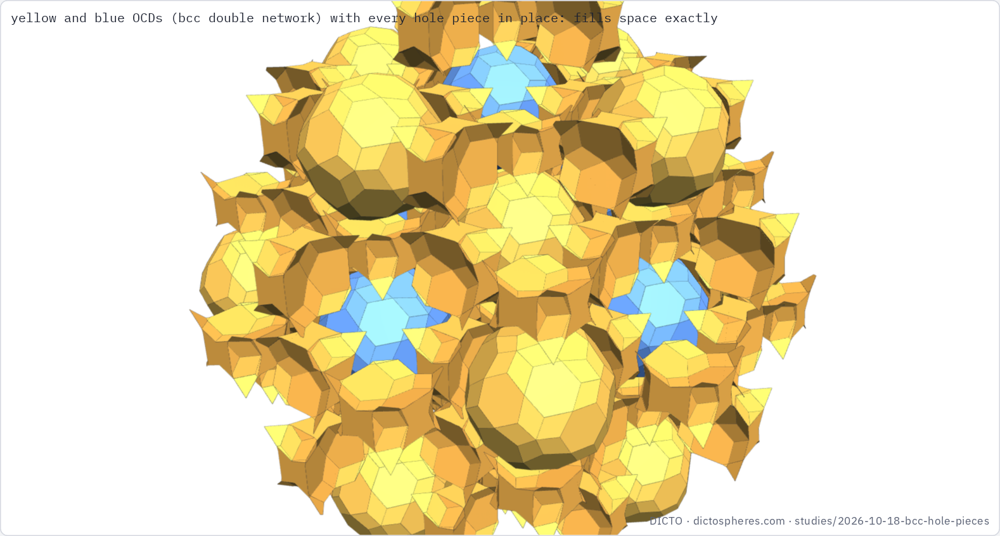<figcaption><b>Figure 18.</b> The double network with every adaptor in place: OGs 77.4332%, adaptors 22.5668%.</figcaption></figure><figure>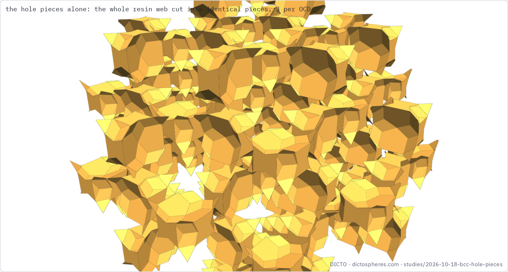<figcaption><b>Figure 19.</b> The resin alone: the whole gap as identical adaptors, three per OG.</figcaption></figure></div>
<p><b>Golden?</b> Its coordinates and volumes are exact golden numbers, but its faces are the OG's kites and hexagons plus flat Voronoi cuts; the kite angles (68.6°, 117.9°, 55.7°) are not golden-rhombus or Penrose angles, so the piece cannot be assembled exactly from golden rhombohedra. A golden version remains open.</p>

<h2>4. Time and compute before the solution</h2>
<div class="tw"><table><tr><th>What</th><th>Amount (from the record)</th></tr>
<tr><td>Study commits on the gap and kit studies</td><td class="num">125 commits, 2026-10-15 11:44 → 10-18 17:32 (about 78 hours elapsed)</td></tr>
<tr><td>Machine search on dicto-node</td><td class="num">puzzler seed 11: 10.0 h; seeds 12 and 13: about 7.6 h each; two symmetric-growth runs: about 16 h each (no result); earlier charge/flow/LNS searches (10-16/17)</td></tr>
<tr><td>Fable reviews (10-18)</td><td class="num">review 1: 52 min · review 2: 42 min · review 3: 21 min · review 4: 26 min · review 5: about 10 min (stopped)</td></tr>
<tr><td>DICTO's description → piece built and confirmed</td><td class="num">same evening; first build commit 17:30, confirmed 17:32</td></tr></table></div>
<p>The search was not wasted: it produced the exact octet kits, the golden facts and the tools that let DICTO's shape be built and verified within minutes. But the shape itself — the simplest fill, one piece per hole — came from DICTO's eye, not from the search, which had been looking for golden pieces and never tried cutting the gap at its holes.</p>

<h2>5. Prior art and caveats</h2>
<p>Searched first in DICTO's reference library, then on the web (Bridges archive and gallery, Wolfram Demonstrations, arXiv, patents), 2026-10-18; every reference below is filed in the library.</p>
<ul>
<li><b>Hole sites:</b> the octahedral holes of bcc are textbook [1]. Cutting free space at interstitial sites is a standard idea; we found no source cutting an OG (or any icosahedral-solid) packing's gap into one adaptor shape this way.</li>
<li><b>Nodes and connectors:</b> Lalvani's periodic structures of nodal polyhedra joined by connector polyhedra on grids including the rhombic-dodecahedron grid [2] are the closest concept to our "solid + glue piece" kits; his symmetries are cubic/tetrahedral, with no golden envelope or OG imprints. His RT packing with gaps [3] uses a non-regular triacontahedron stacked cubically.</li>
<li><b>Interlocking:</b> topologically interlocking blocks built inside the tetrahedral–octahedral (octet) honeycomb, assembled from copies of one block [4], are close in spirit to the keyed W; Voronoi-based woven interlocking tiles [5] likewise. Neither uses icosahedral sockets or Penrose keys.</li>
<li><b>Triacontahedra:</b> Kabai's RT clusters and RT–RD relations [6] (one demonstration still to be viewed before claiming the envelope-inside-the-rhombic-dodecahedron fact); Koskinen's twice-filling RTs [7]; Lin &amp; Corbett's triacontahedral clusters in bcc quasicrystal approximants with rhombohedra between [8]; densest RT lattice packing 0.80174 [9]. Name clash to avoid: Kabai's "Golden Octet Truss" [10].</li>
<li>The OG itself is DICTO's (DICTO DOIs, papers #31–#33); its Penrose link in the octet and the adaptors are from this study.</li>
</ul>
<ol class="refs">
<li>GAMGI tutorials, "Interstices in the BCC structure", gamgi.tecnico.ulisboa.pt.</li>
<li>H. Lalvani, US 5,448,868 (1995), Periodic space structures composed of two nodal polyhedra.</li>
<li>H. Lalvani, US 5,623,790 (1997), Building systems with non-regular polyhedra based on subdivisions of zonohedra.</li>
<li>R. Akpanya et al., Topologically interlocking blocks inside the tetroctahedrille, arXiv:2405.01944 (2024).</li>
<li>E. Akleman, V. Krishnamurthy et al., woven / abeille interlocking space-filling tiles, IEEE TVCG (2021).</li>
<li>S. Kabai, Wolfram Demonstrations (2008): Relating a Rhombic Triacontahedron and a Rhombic Dodecahedron; Cluster of 14 Rhombic Triacontahedra; and Bridges 2010, 30 Cubes on a Rhombic Triacontahedron.</li>
<li>J. Koskinen, Unusual tilings and transformations, Bridges 2011.</li>
<li>Q. Lin, J. D. Corbett, triacontahedral clusters in Sc–Mg–Zn approximants (2006).</li>
<li>S. Torquato, Y. Jiao, Organizing principles for dense packings of nonspherical hard particles, arXiv:1206.3716 (2012); U. Betke, M. Henk, Densest lattice packings of 3-polytopes (2000).</li>
<li>S. Kabai, Golden Octet Truss, Wolfram Demonstrations (2007).</li>
</ol>
<p class="mark">DICTO · dictospheres.com · draft for DICTO's review — not for publication yet</p>
</main>
